Drafts only. Nothing here is published on helgemo.com. All drafts · Daily calendar
Neighborhood page rollout: 28 of 35 pages ready (Nov 25 to Dec 11)
Every image is a v2 refinement of a real Google Maps Street View or Google Earth 3D view of that exact place: same scene and angle, better light and color, cars, people and signs removed, water deep blue. Each page lists its schedule, slug, parent page, meta description and image files in ROLLOUT-MANIFEST.md. Also: the refresh draft of Is Punta Gorda a Good Place to Live? (direct answer up top, 12 FAQs; not approved yet).
2026-11-25 · Ready

Moving to Punta Gorda, FL: The Complete Relocation Playbook
/moving-to-punta-gorda/ · 3 image(s)
2026-11-25 · Ready
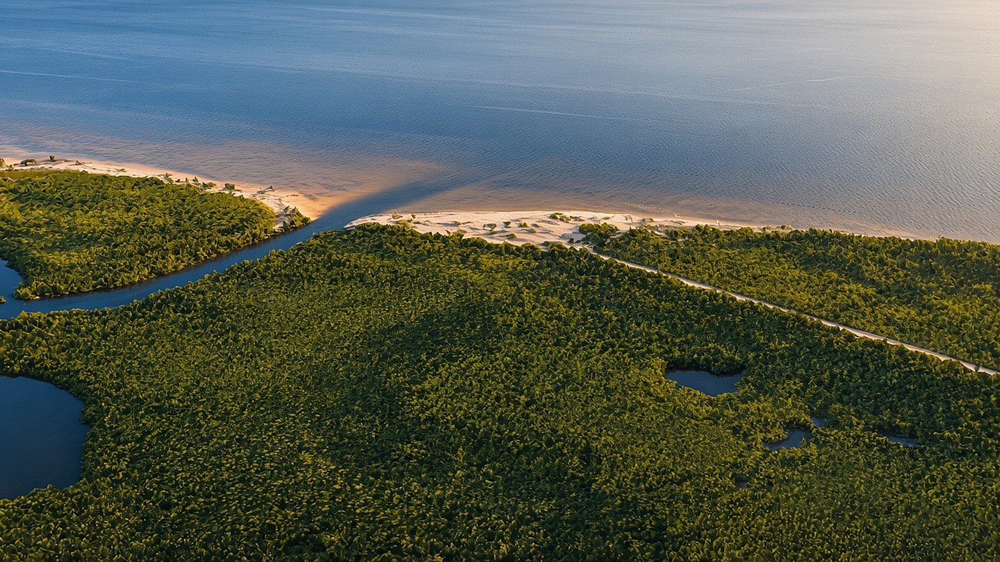
/explore/punta-gorda/ expansion block
/explore/punta-gorda/ · 1 image(s)

2026-11-26 · Ready
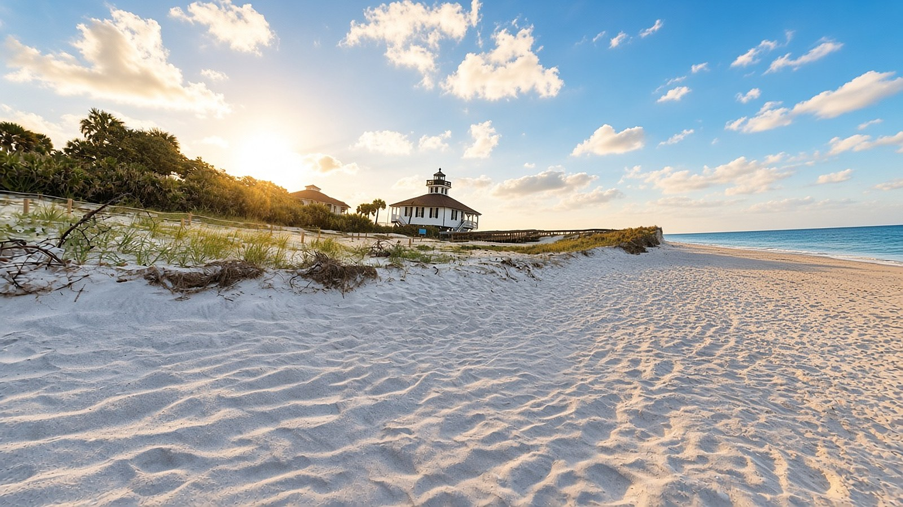
Boca Grande Real Estate: Island Life, One Toll Bridge, and the Costs Nobody Lists
/explore/boca-grande/ · 2 image(s)
2026-11-26 · Ready
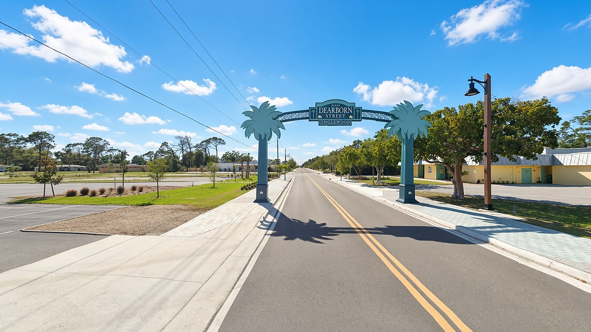
Englewood FL Homes for Sale: Two Counties, One Beach Town, and How to Pick Your Side
/explore/englewood/ · 1 image(s)
2026-11-27 · Ready

Wellen Park Homes for Sale: 11,000 Acres, 16 Builders, and the Fees to Ask About First
/explore/venice/wellen-park/ · 1 image(s)
2026-11-27 · Ready

Placida and Cape Haze Homes for Sale: The Quiet Peninsula at the Gate to Boca Grande
/explore/rotonda-west/placida-cape-haze/ · 2 image(s)
2026-11-28 · Ready

Manasota Key Homes for Sale: Living Between the Gulf and Lemon Bay
/explore/englewood/manasota-key/ · 1 image(s)
2026-11-28 · Ready
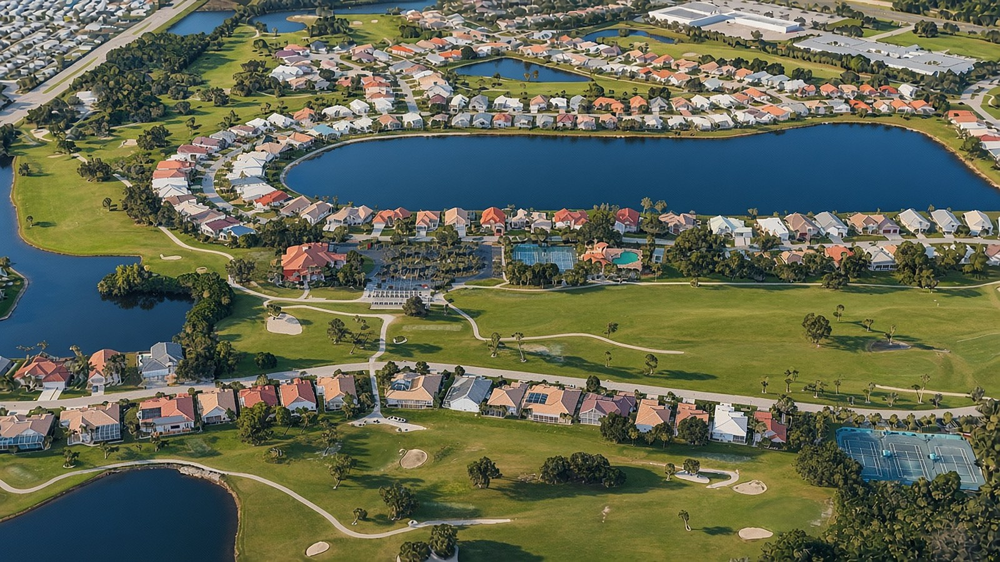
Seminole Lakes Punta Gorda: 450 Homes, 8 Lakes, and a Par-62 Course Inside City Limits
/explore/punta-gorda/seminole-lakes/ · 2 image(s)
2026-11-29 · Ready
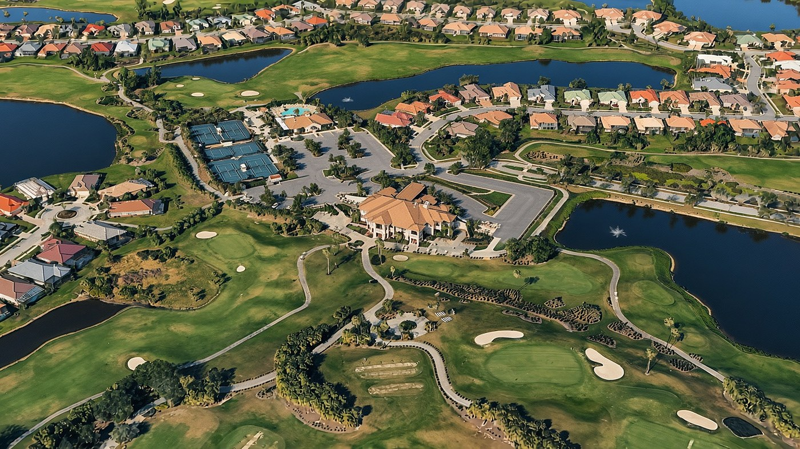
Heron Creek North Port: 27 Holes, No CDD, and What Buyers Should Know
/explore/north-port/heron-creek/ · 1 image(s)
2026-11-29 · Ready
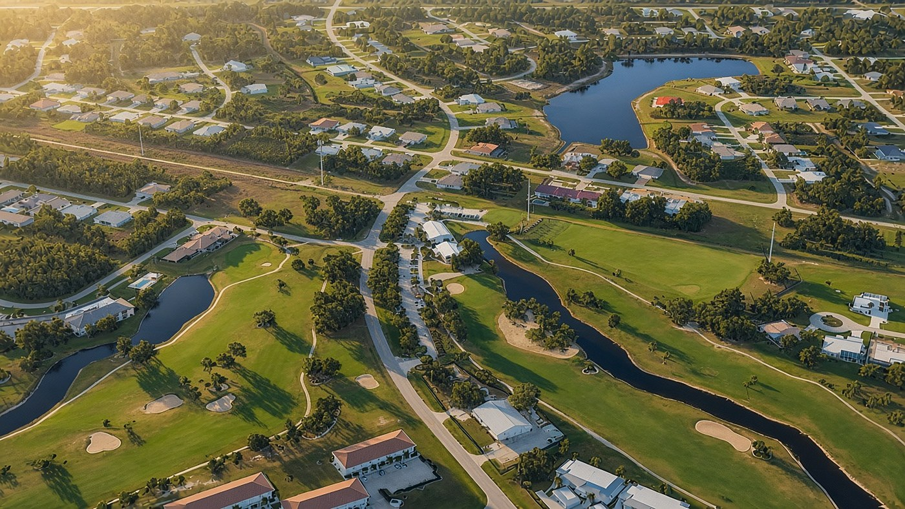
Deep Creek Punta Gorda Homes for Sale: Greenbelts, Deed Restrictions, and Two POAs Explained
/explore/punta-gorda/deep-creek/ · 1 image(s)

2026-12-01 · Ready
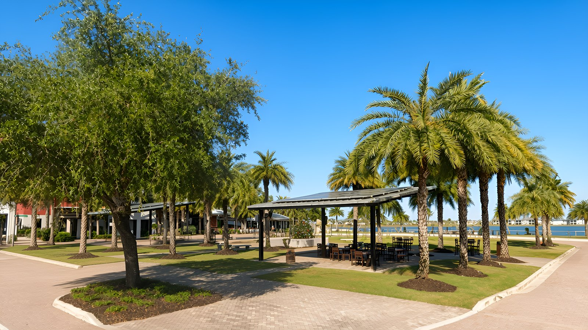
Babcock Ranch Homes for Sale and Area Guide
/explore/punta-gorda/babcock-ranch/ · 1 image(s)
2026-12-01 · Ready
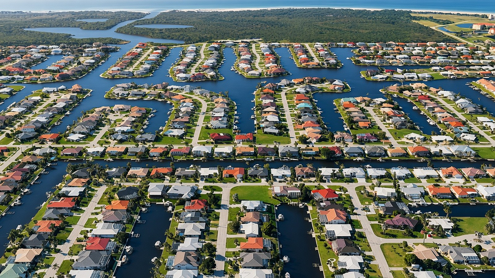
Punta Gorda Isles Homes for Sale: Sections, Canal Fees, and What 4,700 Homes Are Worth
/explore/punta-gorda/punta-gorda-isles/ · 2 image(s)
2026-12-01 · Ready

Downtown Punta Gorda and the Historic District: Homes, History, and What Buyers Should Know
/explore/punta-gorda/historic-district/ · 2 image(s)
2026-12-02 · Ready
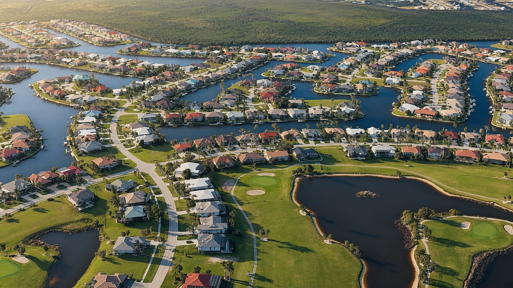
Burnt Store Isles Homes for Sale: Canals, Twin Isles Golf, and the BSI Lock
/explore/punta-gorda/burnt-store-isles/ · 2 image(s)
2026-12-02 · Ready
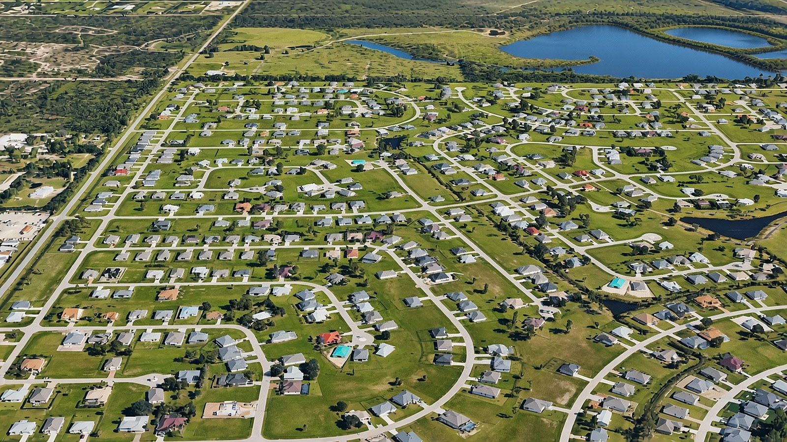
Burnt Store Lakes, Punta Gorda: Lakes, Lots, and New Homes off Burnt Store Road
/explore/punta-gorda/burnt-store-lakes/ · 2 image(s)
2026-12-03 · Ready
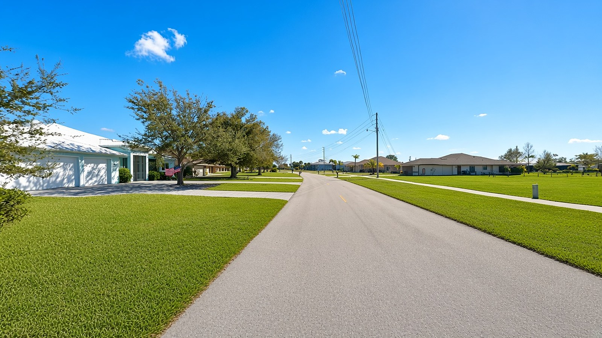
Burnt Store Meadows, Punta Gorda: City Living, Greenbelts, and Homes Under the Waterfront Price
/explore/punta-gorda/burnt-store-meadows/ · 2 image(s)
2026-12-03 · Ready

Heritage Landing, Punta Gorda: Golf Community Homes, the Course, and the CDD
/explore/punta-gorda/heritage-landing/ · 2 image(s)
2026-12-04 · Ready

River Club, Punta Gorda: A Gated Newer-Home Community North of the River
/explore/punta-gorda/river-club/ · 2 image(s)
2026-12-04 · Ready
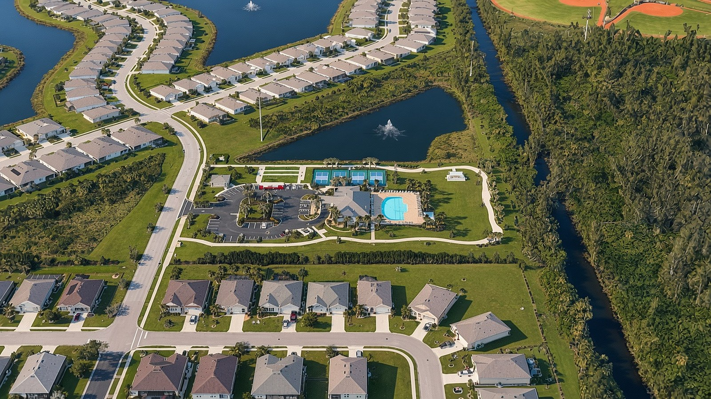
Waterford Estates, Punta Gorda: Newer Homes and Townhomes Near I-75
/explore/punta-gorda/waterford-estates/ · 2 image(s)
2026-12-05 · Ready
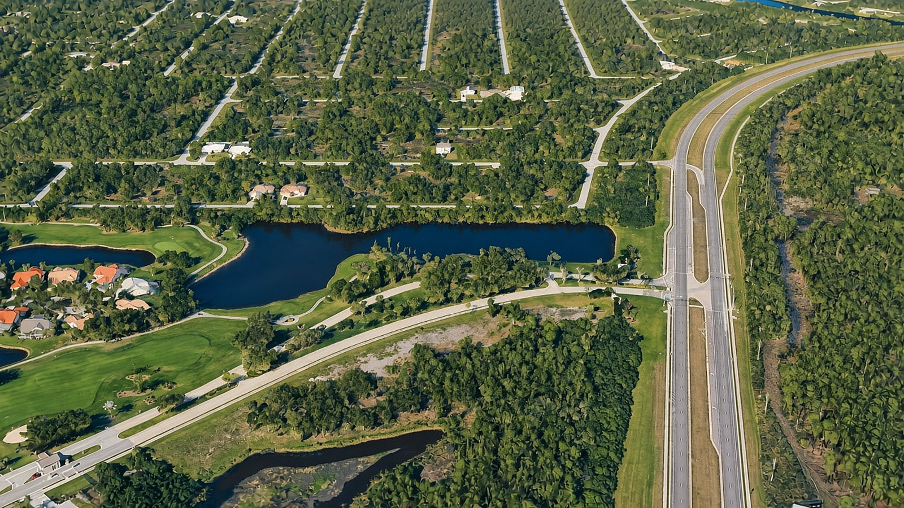
Riverwood, Port Charlotte: Gated Golf Community on the Myakka River
/explore/port-charlotte/riverwood/ · 2 image(s)
2026-12-05 · Ready
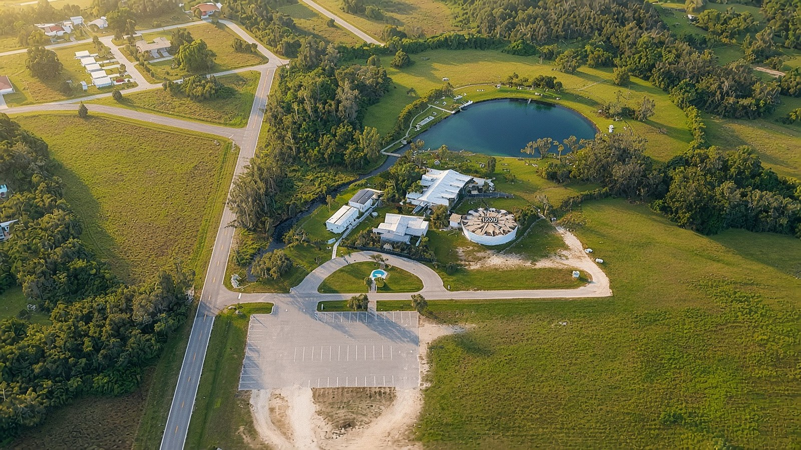
Warm Mineral Springs, North Port: Living Near Florida's Only Natural Warm Spring
/explore/north-port/warm-mineral-springs/ · 2 image(s)
2026-12-06 · Ready
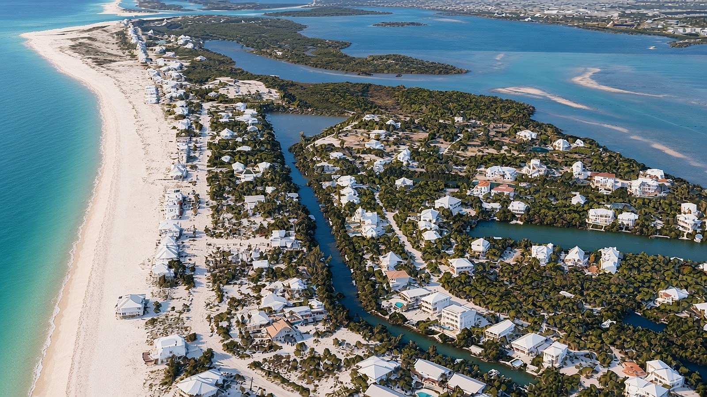
Little Gasparilla Island, Placida: Florida's Bridgeless Beach Island
/explore/englewood/little-gasparilla-island/ · 2 image(s)
2026-12-06 · Ready
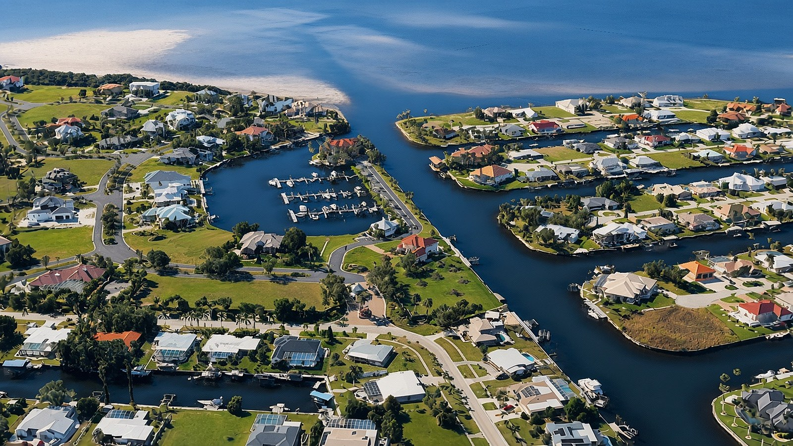
Grassy Point, Port Charlotte: Gated Estate Lots and a Private Marina on Charlotte Harbor
/explore/port-charlotte/grassy-point/ · 2 image(s)
2026-12-07 · Ready
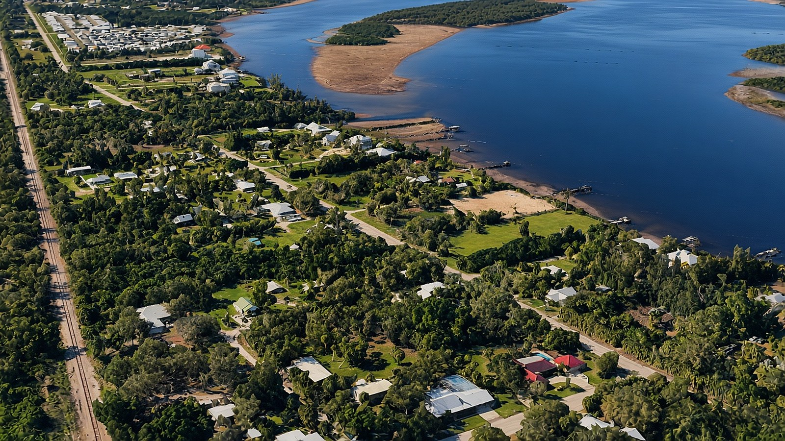
Riverside Drive and Cleveland, Punta Gorda: Old Florida on the Peace River
/explore/punta-gorda/riverside-cleveland/ · 2 image(s)
2026-12-07 · Ready
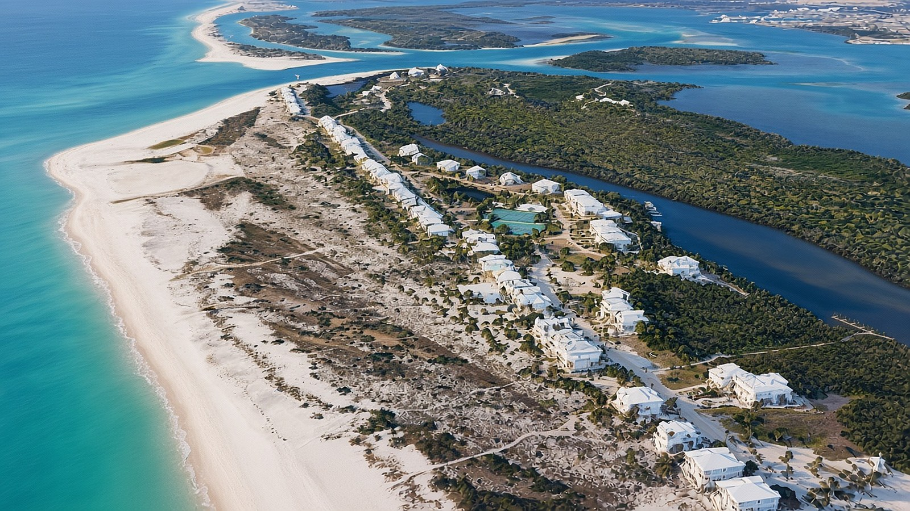
Palm Island (Knight and Don Pedro Islands): Homes Reached by Car Ferry
/explore/englewood/palm-island-knight-don-pedro/ · 2 image(s)
2026-12-08 · Needs images (2)
BeachWalk by Manasota Key, Englewood: A New Community 2.5 Miles from the Beach
/explore/englewood/beachwalk-by-manasota-key/ · 0 image(s)
2026-12-08 · Needs images (2)
Blue Heron Pines, Punta Gorda: A 55+ Golf Community of Manufactured Homes
/explore/punta-gorda/blue-heron-pines/ · 0 image(s)
2026-12-09 · Needs images (2)
Heritage Lake Park, Punta Gorda: Gated Villas and Condos Built Since 2005
/explore/punta-gorda/heritage-lake-park/ · 0 image(s)
2026-12-09 · Needs images (2)
Oyster Creek, Englewood: A Gated Golf Community of 1990s Homes
/explore/englewood/oyster-creek/ · 0 image(s)
2026-12-10 · Needs images (2)
Polynesian Village, Englewood: A Resident-Owned 55+ Co-op a Mile from the Beach
/explore/englewood/polynesian-village/ · 0 image(s)
2026-12-10 · Needs images (2)
Lea Marie Island, Port Charlotte: About 20 Waterfront Homesites off Edgewater Drive
/explore/port-charlotte/lea-marie-island/ · 0 image(s)
2026-12-11 · Needs images (2)
Tangerine Woods, Englewood: A Gated, Resident-Owned Community of 366 Homes
/explore/englewood/tangerine-woods/ · 0 image(s)